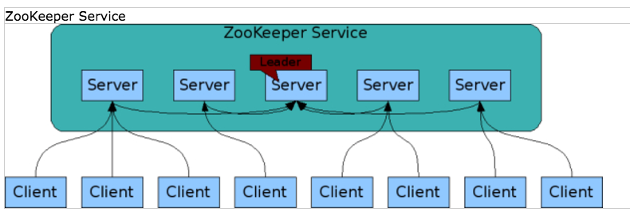
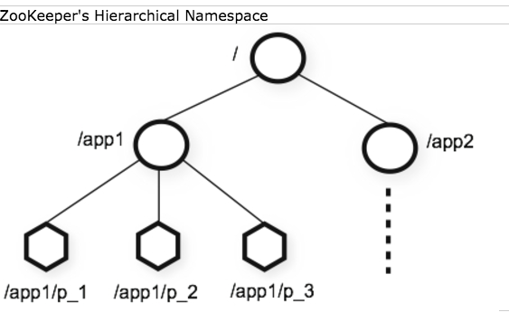
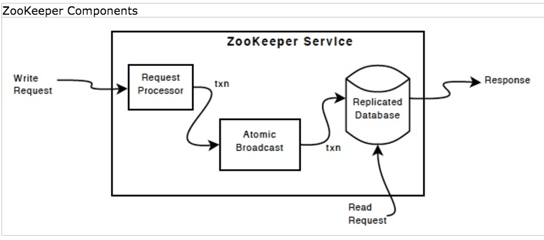
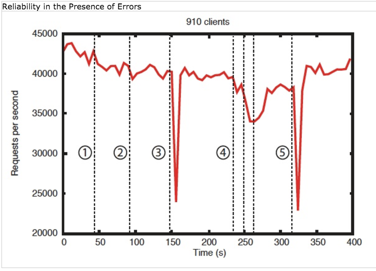

zookeeper笔记
Table of Contents
1 简介
其官方简介直译过来就是：zookeeper是用于分布式应用程序的分布式协作的 高性能服务。
当前我们主要使用它来同步配置文件。
2 安装
无需安装，这里 下载解压即可。
3 hello, World
进入解压目录，新建配置文件 conf/zoo.cfg ：
tickTime=2000 dataDir=/var/lib/zookeeper clientPort=2181
tickTime是zookeeper的基本时间单元。dataDir用来存放内存中数据库的快照。另外，除非另外指定，它还用 来存放数据库更新时的事务日志。clientPort用来监听客户端连接的端口。
现在可以启动server：
bin/zkServer.sh start
在本机可以这样连接zookeeper：
bin/zkCli.sh -server 127.0.0.1:2181
连接上以后，会进入到一zk的shell中。help可以查询：
[zk: 127.0.0.1:2181(CONNECTED) 10] help
ZooKeeper -server host:port cmd args
stat path [watch]
set path data [version]
ls path [watch]
delquota [-n|-b] path
ls2 path [watch]
setAcl path acl
setquota -n|-b val path
history
redo cmdno
printwatches on|off
delete path [version]
sync path
listquota path
rmr path
get path [watch]
create [-s] [-e] path data acl
addauth scheme auth
quit
getAcl path
close
connect host:port
[zk: 127.0.0.1:2181(CONNECTED) 11]
查询一下看当前存了啥：
[zk: 127.0.0.1:2181(CONNECTED) 13] ls /
[zookeeper]
现在啥也没有。下面我们新建一个znode然后进行一些查询动作：
[zk: 127.0.0.1:2181(CONNECTED) 14] create /zk_test my_data
Created /zk_test
[zk: 127.0.0.1:2181(CONNECTED) 15] ls /
[zookeeper, zk_test]
[zk: 127.0.0.1:2181(CONNECTED) 16] get /zk_test
my_data
cZxid = 0xb
ctime = Wed Jul 12 17:00:18 CST 2017
mZxid = 0xb
mtime = Wed Jul 12 17:00:18 CST 2017
pZxid = 0xb
cversion = 0
dataVersion = 0
aclVersion = 0
ephemeralOwner = 0x0
dataLength = 7
numChildren = 0
[zk: 127.0.0.1:2181(CONNECTED) 17] set /zk_test my_data_2
cZxid = 0xb
ctime = Wed Jul 12 17:00:18 CST 2017
mZxid = 0xc
mtime = Wed Jul 12 17:00:34 CST 2017
pZxid = 0xb
cversion = 0
dataVersion = 1
aclVersion = 0
ephemeralOwner = 0x0
dataLength = 9
numChildren = 0
[zk: 127.0.0.1:2181(CONNECTED) 18] get /zk_test
my_data_2
cZxid = 0xb
ctime = Wed Jul 12 17:00:18 CST 2017
mZxid = 0xc
mtime = Wed Jul 12 17:00:34 CST 2017
pZxid = 0xb
cversion = 0
dataVersion = 1
aclVersion = 0
ephemeralOwner = 0x0
dataLength = 9
numChildren = 0
[zk: 127.0.0.1:2181(CONNECTED) 19]
然后我从另一台安装了zookeeper的机器中连接进来，执行查询操作：
xxx@box:/tmp/zookeeper-3.4.10$ bin/zkCli.sh -server 192.168.57.1:2181
[zk: 192.168.57.1:2181(CONNECTED) 0] ls /
[zookeeper, zk_test]
[zk: 192.168.57.1:2181(CONNECTED) 1] get /zk_test
my_data_2
cZxid = 0xb
ctime = Wed Jul 12 17:00:18 CST 2017
mZxid = 0xc
mtime = Wed Jul 12 17:00:34 CST 2017
pZxid = 0xb
cversion = 0
dataVersion = 1
aclVersion = 0
ephemeralOwner = 0x0
dataLength = 9
numChildren = 0
[zk: 192.168.57.1:2181(CONNECTED) 2]
可以发现，此时这台机器上也可以查到刚才我们新加的节点信息。
4 设计理念和架构
4.1 设计目标
zookeeper旨在给分布式的应用程序减负，可以让它们不再从头实现一遍协作 服务。
zookeeper是简单的。 zookeeper允许分布式的应用程序通过一个类似于标 准文件系统的共享式地分层命名空间来相互协作。
这个共享的命名空间是由data registers构成的（按zookeeper的说法是： znodes），它们就像是文件和目录一样。和传统文件系统不同，zookeeper的 数据是存在内存中的，这使得它可以实现高吞吐量和低延迟。
zookeeper保证了高性能、高可靠性和严格的顺序访问。高性能是表现在它可 以用在大型的分布式系统中。高可靠性是指它可以避免单点故障的情况出现。 严格的顺序执行使得客户端可以执行复杂的同步原语操作。
zookeeper是自冗余的 。就像其它分布式程序一样，zookeeper也可以冗余 地分布在多个物理主机上。如下图：

组成zookeeper服务的每一个server都知道所有的servers。它们共同维护了一 张内存中状态映象，还维护了存放在磁盘中的事务日志和快照。只要大多数的 server是可用的，zookeeper的服务就是可用的。
客户只和一个server连接。client和server之前，通过一个tcp连接来发送请 求、接收回复、接收事件以及发送心跳。如果client和一个server的连接断掉， 它会和另外的server建立连接。
zookeeper是有序的 。它用一个数字标记每一个更新，这些数字可以反映所 有zookeeper事务的顺序。后续操作可以使用这个顺序来实现更高级别的抽象， 比如同步原语。
zookeeper是很快的 。特别是对于主要是读的操作。zookeeper应用程序在 成千上万台机器上运行，读操作多写操作更多进，它的性能最好，大概能达到 10:1 的比例。
4.2 数据模型和分层命名空间
命名空间就像传统一文件系统一样。每个节点都是一个path。

4.3 节点和临时节点
不像传统文件系统，每个zookeeper节点上都可以既有数据，也有子节点。这 就好像有一个文件系统允许文件也是目录一样。（zookeeper设计来是为了存 协作数据的：状态信息，配置文件，位置信息等，所以在每个节点上存的数 据应该不会太多，在b到kb范围。）。这里我们直接使用znode来表示 zookeeper中的数据节点。
znodes维护一个统计结构，包括数据修改，ACL修改和时间戳的版本号。每次 znode的数据改变了，版本号都会增加。每次client取回数据时，它也会取回 数据的版本号。
存在节点中的数据是自动进行读和写的。读会取出关联到这个节点上所有数 据，写则覆盖它上面的所有数据。每个节点都有访问控制列表（Access Control List），它决定了谁能做什么操作。
zookeeper还支持临时节点的概念。这些临时节点和创建它们的会话同时存在， 当会话结束，它们就被删除了。由于这样的特性，临时节点不能有子节点。
4.4 条件更新和watch
zookeeper还支持watch的概念。client可以设置对一个节点进行watch。当一 个节点发生变化时，一个watch可能被触发或者删除。当一个watch被触发， client将会收到节点变化的数据包。如果client和server之前的连接断掉了， client会收到一个本地的提醒。
4.5 保证
zookeeper很快也很简单。而它的目标是做为许多更加复杂的服务的基础。所 以它一定能保证下面的内容：
- 顺序一致性：从client发来的更新一定会按照它们发送的顺序来执行。
- 原子性：更新要么成功要么失败，没有其它结果。
- 单一系统快照：client不管连接的哪个server，都应该看到的是同一个 service。
- 可靠性：一旦一个更新被应用，它就应该一直是这个状态，直到下一次某 个client再次更新它。
- 及时性：client在一定时限内，都可以访问到最新的系统。
4.6 简单的API
简单是zookeeper的设计思想，所以它只是提供了下面这些操作：
- create：在树的某个位置创建节点。
- delete：删除一个节点
- exists：测试一个节点是否存在
- get data：从节点中读取断数据
- set data：把数据写到节点中
- get children：取回一个节点的了节点集合
- sync：等待数据传播
5 实现

上图显示了zookeeper比较高层面的组件。
除了请求处理器，其它所有组成zookeeper服务的server都会保留一份每个组 件的拷贝。（这句话没看懂）
图中的replicated database存放在内存中，它包含了所有的数据（整颗树）。 为了可恢复性，所有的更新都记录在磁盘上。而所有写地操作都会先序列化到 磁盘再应用到内存中的数据库中。
每个server都可以为client服务，每个client都可以任意连接到一个server来
请求数据。读请求直接就请求到每个server内存中的数据库。任何更改服务状
态的请求和写请求都由一个叫 agreement protocol 来处理。
做为 agreement protocol 的一部分：所有从客户端发来的写请求都直接发
送给了单个server，这个server叫loader。剩下的servers都叫followers，它
们接收来自leader的消息，并同意消息传递。消息传递层来处理发生失败时
leader的选择，它可能会重新选择一个leader，然后它还负责给新的leader同
步followers。
zookeeper使用一个自定义的原子消息协议。正因为消息传递层是原子的， zookeeper能保证本地的副本不会出现分叉。当leader收到一个写请求时，它 会计算出当这个写请求将要被应用时系统的状态，然后把它转化为捕获请状态 的事务。
6 可靠性

The are a few important observations from this graph. First, if followers fail and recover quickly, then ZooKeeper is able to sustain a high throughput despite the failure. But maybe more importantly, the leader election algorithm allows for the system to recover fast enough to prevent throughput from dropping substantially. In our observations, ZooKeeper takes less than 200ms to elect a new leader. Third, as followers recover, ZooKeeper is able to raise throughput again once they start processing requests.
上图可以看出：
- 如果followers发生错误，然后很快又恢复了，zookeeper还是能保持一个 很高的吞吐量。
- 更重要的，leader选举算法可以允许系统很快的恢复。这样可以保证系统 吞吐量不会因为leader发生错误而很快下降。据我们观察来看，zookeeper 在200ms以内就可以选出一个新的leader出来。
- 当一个follower恢复后，zookeeper又可以恢复原来的吞吐量。
7 kazoo
kazoo is python bindings for zookeeper.
from kazoo.client import KazooClient import logging logging.basicConfig() zk = KazooClient(hosts='127.0.0.1:2181') zk.start() @zk.ChildrenWatch("/my/favorite/node") def watch_children(children): print("From children watchs Children are now: %s" % children) # Above function called immediately, and from then on @zk.DataWatch("/my/favorite") def watch_node(data, stat): print("From data watchs Version: %s, data: %s" % (stat.version, data.decode("utf-8"))) # Ensure a path, create if necessary zk.ensure_path("/my/favorite") # Create a node with data if not zk.exists("/my/favorite"): zk.create("/my/favorite/node", b"a value") if zk.exists("/my/favorite"): data, stat = zk.get("/my/favorite") print("Version: %s, data: %s" % (stat.version, data.decode("utf-8"))) children = zk.get_children("/my/favorite") print("There are %s children with names %s" % (len(children), children)) # update the node with data zk.set("/my/favorite", b"some data") data, stat = zk.get("/my/favorite") print("Version: %s, data: %s" % (stat.version, data.decode("utf-8"))) zk.ensure_path("/my/favorite/node/test") if not zk.exists('/my/favorite/node/test'): zk.create("/my/favorite/node/test", b"a test value") zk.delete("/my/favorite/node", recursive=True)